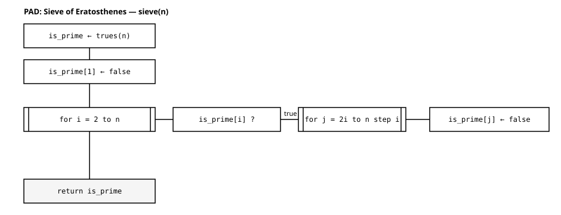

trues(5) # Bool array, all true5-element BitVector:
1
1
1
1
1今回は，配列を まとめて生成 し，さらに 要素を書き換える（要素代入）ことを学ぶ． 第2回では配列の 「読み・スライス」 だけを扱ったが，今回は初めて 「書き」 に踏み込む． そしてその中で，第1回で予告した b = a の話（aliasing）に決着をつける． 最後に，要素代入，繰り返し，分岐，整数をすべて使う エラトステネスの篩 を組み立て， 既知の素数列と照合して検証する．
要素を1つずつ書き並べなくても，決まった値で埋めた配列 をまとめて作れる．
trues(n)：全部 true の Bool 配列（n 個）．fill(x, n)：値 x を n 個並べた配列．zeros(n) / ones(n)：0.0 / 1.0 を n 個（小数）．trues(5) # Bool array, all true5-element BitVector:
1
1
1
1
1fill(0, 5) # five 0s5-element Vector{Int64}:
0
0
0
0
0trues(n) は，あとで学ぶ エラトステネスの篩 で「最初は全部を素数候補とみなす」 という出発点を作るのに使う．「全部 true から始めて，違うものを false に落とす」 という発想を覚えておこう．
第2回では a[2] で 読み出した．今回は同じ添字に = で値を入れて， 配列の中身（その要素）を書き換える．これを 要素代入 という．
下のコードを実行すると，a はどうなるか？ 実行する前に予想しよう．
a = [10, 20, 30, 40]
a[2] = 99
a # only the 2nd element changes4-element Vector{Int64}:
10
99
30
40a[2] = 99 は，a という配列の 2番目の要素そのもの を 99 に書き換える． 配列はそのまま（同じひとかたまり）で，中身だけが変わった．
第2回の a[2]（読み）と，今回の a[2] = 99（書き）は，同じ添字記法の表と裏 である． 右辺にあれば「読み」，= の左辺にあれば「書き」になる．
第1回で「b = a のように 同じ値を指す2枚の名札 ができることがある， 配列で効いてくる」と予告した．今回がその配列である．
b = a としてから a の要素を書き換えたとき，b はどうなるか？ 実行する前に予想しよう．
a = [1, 2, 3]
b = a # what does b refer to now?
a[1] = 99 # rewrite the 1st element through a
b # what does b show?3-element Vector{Int64}:
99
2
3b = a は，a の 中身をコピーしない． b と a は 同じ1つの配列を指す2枚の名札 になる（これを aliasing という）． だから a を通じて中身を書き換えると，b を通して見ても変わってしまう．
スカラー（数）では b = a の後に a を変えても b は変わらなかった（第1回）． 配列で挙動が違うのは，要素代入が「中身の書き換え」だから である． 名札が2枚あれば，どちらの名札から書き換えても，同じ中身 が変わる．
aliasing でも，再代入（名札の貼り替え） なら話は別である．
次の a = a .+ 100 のあと，b はどうなるか？ 上の aliasing と同じだろうか，違うだろうか？
a = [1, 2, 3]
b = a # b and a point to the same array
a = a .+ 100 # reassignment: rebind a to a different array
b # same as the aliasing case?3-element Vector{Int64}:
1
2
3a[i] = x：中身を書き換える．同じ配列を指す b にも影響する．a = a .+ 100：右辺で 新しい配列 を作り，名前 a を そちらへ貼り替える． もとの配列は変わらないので，b は元のまま．「右が先，左は後」という第1回の再代入の考え方が，ここでも効いている．
独立した配列がほしいときは，copy で 中身を複製 する．
a = [1, 2, 3]
b = copy(a) # a separate array with copied contents
a[1] = 0 # even if we rewrite a...
b # and with copy, what is b?3-element Vector{Int64}:
1
2
3b = a は名札の共有（aliasing），b = copy(a) は中身の複製． 配列を書き換える前に「これは共有された名札か？」と問う習慣をつけよう．
ここまでの道具（配列の生成，要素代入，繰り返し（for），分岐（if），整数の倍数）を すべて統合すると，与えた数以下の素数を求める エラトステネスの篩 ができる．
考え方はこうである．
2 以上をすべて 素数候補 とみなす（trues(n)）．i の 倍数（2i, 3i, …）を 合成数として落とす（false）．篩は 外ループ（候補 i を回す）の中に 分岐（i が素数なら）があり， さらにその中に 内ループ（i の倍数を落とす）が入っている，入れ子 の構造である． この入れ子こそ PAD（処理の流れ図）の真価が出るところで， 授業では Excalidraw で「外→分岐→内」の三重構造を図示する．
内ループに出てくる 2i は 2 * i の意味である． Julia では，数と変数を 続けて書くと掛け算になる（2i，3x など）． 数式に近い見た目で書けるので，係数を掛けるときによく使う．
function sieve(n)
is_prime = trues(n)
is_prime[1] = false # 1 is not prime
for i in 2:n # outer loop: candidate i
if is_prime[i] # if i is prime
for j in 2i:i:n # inner loop: multiples of i
is_prime[j] = false # mark as composite (element assignment)
end
end
end
return is_prime
endsieve (generic function with 1 method)この sieve(n) の構造を図にすると 図 1 のようになる．図では，ネストが深まるほど箱が右へ伸びる．

sieve(n) の構造（PAD）．候補を初期化し，外ループ for i in 2:n の各 i について「素数なら内ループ for j = 2i:i:n で倍数を false」を行い，最後に is_prime を返す．
sieve(n) が返すのは Bool 配列 で，各位置が素数かどうかを表す．
sieve(10) # whether 1-10 are prime (sequence of true/false)10-element BitVector:
0
1
1
0
1
0
1
0
0
0素数そのものの並びがほしいときは，findall で true の位置 を取り出す．
30 以下の素数を，先に自分で書き出して から実行し，照合しよう．
findall(sieve(30)) # positions of true = primes10-element Vector{Int64}:
2
3
5
7
11
13
17
19
23
29これが本当に正しいか，既知の素数列（30 以下の素数）と 照合（L2検証）する： 2, 3, 5, 7, 11, 13, 17, 19, 23, 29．一致していれば，篩は正しく動いている．
スライス（第2回）に .= と書くと，その範囲の要素をまとめて書き換える． . が付くのは，右辺の1つの値を範囲の全要素へ配るためである（ブロードキャストと同じ考え方）．
a[2:4] .= 0 # set the 2nd to 4th elements to 0 (in place)これは 要素代入 の仲間で，配列の 中身 が変わる． a = …（再代入＝名札の貼り替え）とは別物である．
内側の for ループも，これを使えば 1行のまるごと代入 に書ける（結果は同じ）．
is_prime[2i:i:n] .= false # set positions of multiples of i to false at once「1つずつループで落とす」か「まとめて代入する」か．処理の流れ で考えるか エンティティ（ひとかたまり） で考えるか，2つの見方を行き来できるようにしておこう．
篩は 境界（off-by-one） を間違えやすい．既知素数列と照合すると，間違いが 発覚 する．
2i でなく i にすると
内ループを for j in i:i:n にすると，i 自身（i = i × 1）まで false に落としてしまう． すると「素数だ」と判定したそばから自分を消すので，結果は すべて空 になる．
function sieve_bad(n)
is_prime = trues(n)
is_prime[1] = false
for i in 2:n
if is_prime[i]
for j in i:i:n # ← bug: drops i itself too
is_prime[j] = false
end
end
end
return is_prime
end
findall(sieve_bad(30)) # does not match known primes at all (empty)Int64[]1 を素数として残すと
is_prime[1] = false を書き忘れると，1 が素数として混ざる（既知素数列に 1 は無い）． ここでも 照合 によって誤りに気づける．
正しい篩（2i から，1 は除外）は既知素数列と一致した． 「予測 → 実行 → 既知と照合」 が，アルゴリズムが正しいことを確かめる王道である．
trues(n)，fill(x, n)，zeros(n) / ones(n) でまとめて作る．a[i] = x は 中身の書き換え（第2回の「読み」に対する「書き」）．b = a は 同じ配列を指す2枚の名札．a の要素を書き換えると b も変わる． 独立させたいときは b = copy(a)．a = a .+ 100（名札の貼り替え）と 要素代入 a[i] = x（中身の書き換え）は別物． 再代入なら b は変わらない．findall(sieve(n)) で素数列を得て，既知素数列と照合して検証する．2i か i か，1 の扱い）は 間違えやすい落とし穴 である．既知素数列との照合で発覚させる．次を実行したあと，b を予測してから確かめよ．b = a を b = copy(a) に変えるとどうなるか．
a = [5, 6, 7]
b = a
a[3] = 0findall(sieve(50)) を予測（50 以下の素数）してから実行し，既知素数列と照合せよ．
内ループを使わず，スライスへのまとめ代入（.=）で書き換えてみよ．findall(sieve(30)) の結果が変わらないことを確かめよ．
近くの人と話し合う．
sieve(n) の外ループは for i in 2:n と，n まで回している．
n まで回す版と結果を比べて確かめよ．いくつかの n で一致したら，正しいと言い切ってよいか．